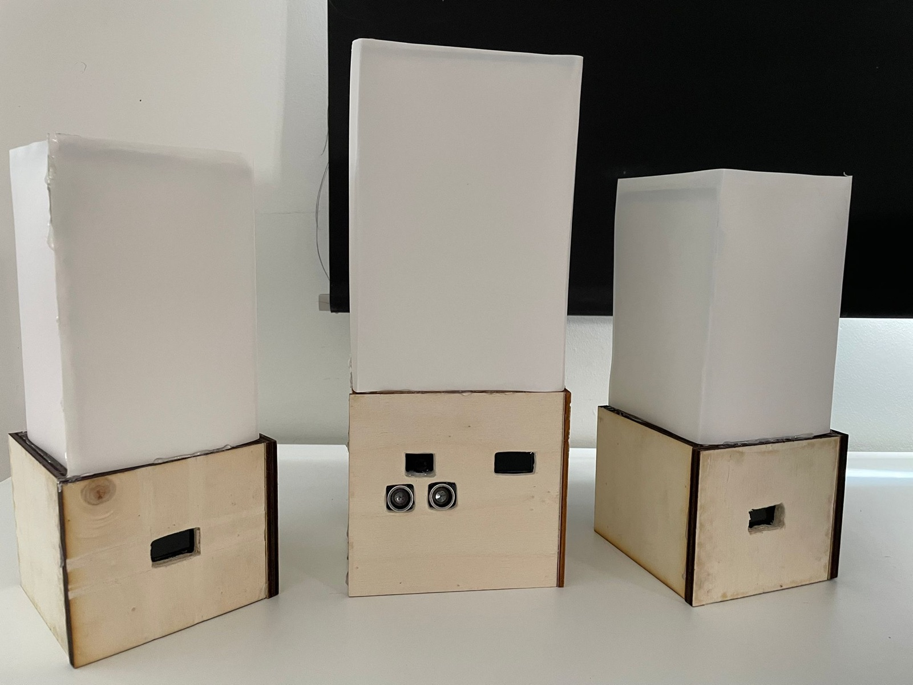
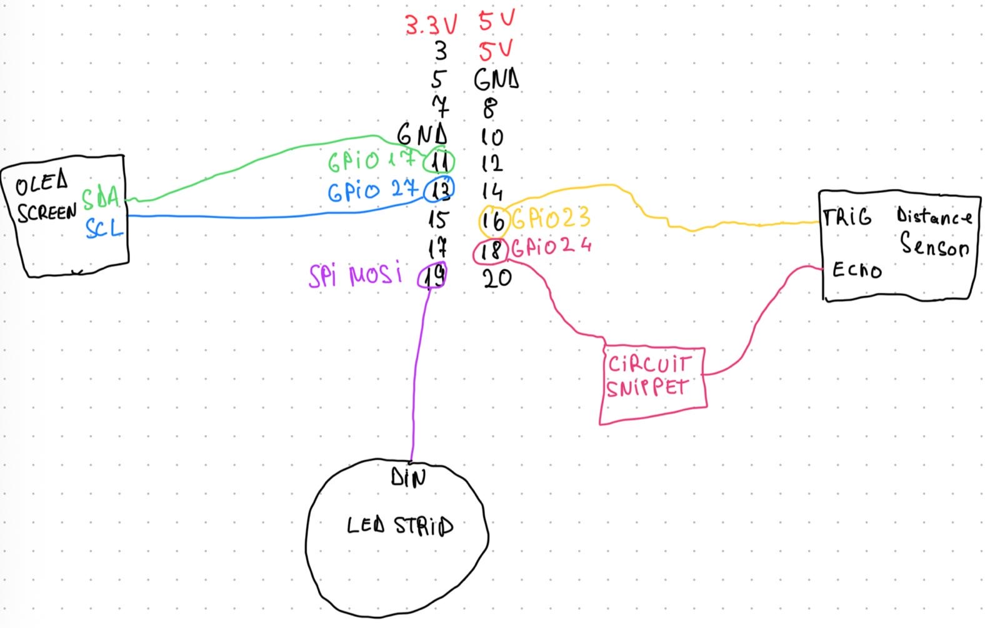

May – June 2025 · Howest Project One · solo
Three lamps you control with hand gestures. A camera on the main lamp reads your hand and the other two lamps react over Wi-Fi.
A Raspberry Pi 5 runs a YOLO hand-gesture model on a USB webcam and publishes each gesture over MQTT. Two ESP32 lamps subscribe, fade their NeoPixel rings and show their state on a small OLED.
gesture action ------- ------ fist (2 s) pick the next lamp palm on / off like colour 1 dislike colour 2 v-sign colour 3
Five classes, 3,675 images. mAP50 ≈ 0.995, mAP50-95 ≈ 0.986.
Raspberry Pi 5, 2× ESP32, 3× NeoPixel ring, 3× OLED, ultrasonic sensor, USB camera. About €157 in parts. Laser-cut 8 mm plywood bases with a fabric diffuser.


Python, Ultralytics YOLO, OpenCV, paho-mqtt · Arduino C++ (PubSubClient, NeoPixel, SSD1306).
Code: in the Howest course repository, shown on request.